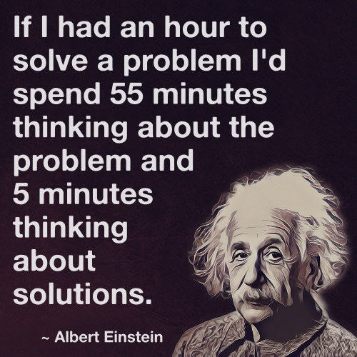

Great research is only two: Vision and Work Hard
according to Nobel prize winner Shinya Yamanaka, and I could not agree more.
Vision: You must choose “great” topic, there are thousands of good topics out there, but your job is to throw away all these "good" one, and pick only the “great one”, the most promising one. As the two legendary man up there has suggested, spend a LOT of time here.
Work hard: Once you decide your topic, you should go ham. Edison said 99% perspiration and 1% inspiration and this is so true. Only the most competent guy publish great research. If you are not competent enough, forget about it. Good news is that all competent guy starts as a dumb guy, listen again - "all competent guy starts as a dumb guy”. You can only learn to “work smart” after you “work hard”. Work hard also means you should focus. If you have many activities, you probably cannot focus well, and you are likely not gonna do any great or even “good enough” research. Focus on one thing and do it “great” not mediocre. This also applies to your career goals.
For choosing the most promising topic, consider these five characteristics:
- Novelty: What is new here? Did you produce new knowledge, even a little? What can be learned from here? And why has it not been done before? Maybe it is new but maybe it is something people know but do not see the value to do it. Putting everything together may not be good research.
- Significance: What is the problem you are solving? What impact can it make? Who will benefit from this work? Why is it so hard or challenging? If this is not solved, will it still be okay? How much this work expands our research opportunities and problem-solving capacity? Many great works are those that other people can be built upon. Do not simply drift along doing what comes, following the easiest path to tomorrow. Great researchers all spend a lot of time and effort examining the important problems in their area. Read this for more insights.
- Feasibility: Can you really do the work? Do you have the necessary skills, tools or dataset? Can you really finish it within your Ph.D. time? You should have some reasonable idea how to begin. Feasibility is also about timeliness. Einstein tried to solve the unified theory but did not find it in the end. Perhaps there are just no tools to currently solve it, or perhaps it is a wrong problem.
- Validity: Does your work really “works”? Is your methodology sound? Is every experimental design decisions clear? Ultimately, did you really prove what you have claimed?
- Clarity: Did you clearly communicate the above criteria in the paper, in your talks, in your casual conversation with academics?
Great computing work commonly excels in both 1) science and 2) engineering. It asks a good question and the answer is well supported by solid evidence (science). It also achieves its claimed technical goal, e.g., efficiency, productivity, etc, or provide concrete design/engineering implications or guidelines (engineering).